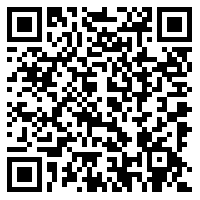

ID 로그인
일회용 번호
QR코드
로그인 상태 유지
보안접속
로그인
삼덕 도서관 앱의 메뉴 > 설정 > 로그인 아이디 관리 > 더보기 > 일회용 로그인 번호에 보이는 번호를 입력해 주세요.
로그인
 공용 네트워크, 공용 PC라면 안전을 위해 QR코드로 로그인해주세요.
삼덕 도서관 앱 > QR코드버튼을 눌러 스캔하면 로그인 됩니다.
남은 시간 : 3분 00초
비밀번호 찾기
아이디 찾기
회원가입